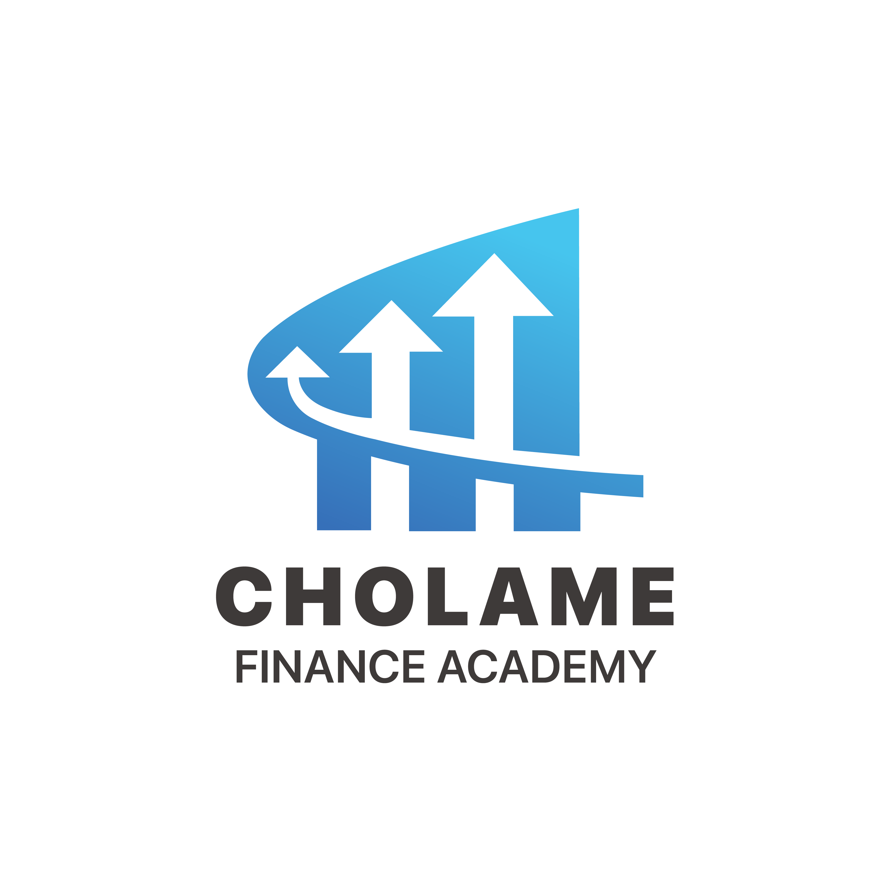

Economic trends influence financial systems, business environments, and everyday decision-making. At Cholame Finance Academy, understanding economic trends is an important part of financial education because it helps individuals interpret changes occurring in the broader economy.
Economic activity is shaped by a variety of factors including consumer behavior, business investment, government policies, technological innovation, and global events. By studying these trends, learners can develop a deeper understanding of how economies function and evolve over time.
Economic trends are long-term patterns or movements within an economy. These trends may relate to economic growth, employment, inflation, productivity, consumer spending, or other important indicators.
Economists and analysts use economic data to identify trends and better understand how different factors influence economic performance. These insights help businesses, governments, and individuals make informed decisions.
Inflation refers to the general increase in prices over time. While moderate inflation is often a normal feature of growing economies, significant changes in inflation can influence purchasing power and financial planning.
Understanding inflation helps individuals recognize how economic conditions may affect personal budgets, savings, and long-term financial goals.
Employment levels and economic growth are often viewed as key indicators of economic health. Higher employment generally supports consumer spending and business activity, while economic growth can create opportunities for innovation and development.
Monitoring these indicators provides valuable insights into broader economic conditions and can help individuals understand the environment in which businesses and communities operate.
Economic trends affect many aspects of daily life, including education, career opportunities, financial planning, and business decision-making. Understanding these trends encourages informed thinking and helps individuals evaluate information more effectively.
Rather than reacting solely to short-term events, individuals who understand economic trends can develop a broader perspective and make decisions with greater confidence.
At Cholame Finance Academy, we encourage learners to develop awareness of economic conditions and the factors that influence change. Understanding economic trends supports financial literacy, analytical thinking, and lifelong learning.
Through continuous education and practical understanding, individuals can build stronger foundations for personal growth, professional development, and informed participation in society.